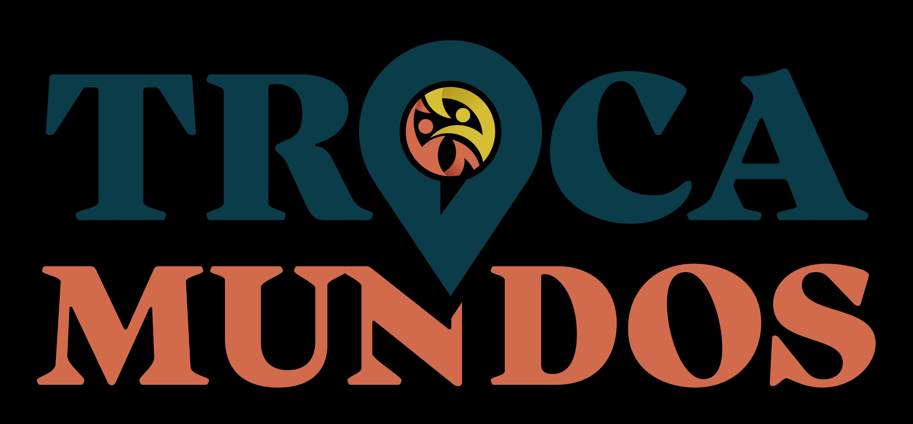

Onde a memória encontra quem chegou para ficar.
Há pessoas que chegaram a Portugal e ainda não pertencem de verdade.
E há pessoas que sempre estiveram aqui, com décadas de histórias que ninguém ouve.
O Troca-Mundos existe para que esses dois mundos se encontrem.
Piloto a lançar em Lisboa · Gratuito para idosos
O problema
O mesmo espaço, mas nunca o mesmo encontro.
Solidão do expat
84% têm poucos ou nenhum amigo português, mesmo após anos de residência.
Relações superficiais
Eventos, networking, aulas - mas nada que crie pertença real à cultura local.
Barreiras culturais
69% quer conhecer portugueses autenticamente, mas não sabe como fazê-lo.
Falta de terceiros espaços
Não existem estruturas que facilitem encontros significativos com a comunidade local.
Isolamento social crescente
44.500 idosos vivem sozinhos ou em vulnerabilidade só em Lisboa (GNR, 2022).
Invisibilidade intergeracional
70% da população com +65 anos experiencia solidão de forma significativa.
Perda de reconhecimento
Décadas de história e saberes únicos que ninguém ouve — e que correm risco de se perder.
Rotinas pouco estimulantes
Baixa exposição a experiências novas e ausência de espaços de partilha significativos.
Como funciona
Sessões semanais de 90 minutos · Grupos de até 15 pessoas
O mercado
Lista de espera
O piloto arranca em breve. Se quiseres ser das primeiras pessoas a participar ou a trazer o Troca-Mundos para a tua cidade - começa aqui.
Entra na lista de esperaPrometemos não encher a caixa — só avisamos quando for altura.